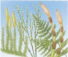
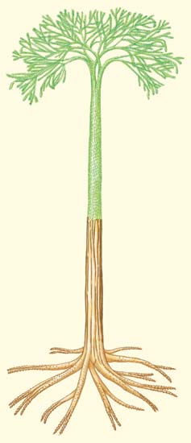

27 Plantas sin semillas
561
CONCEPTOS CLAVE
27.1 Las adaptaciones de las plantas terrestres incluyen una cutícula cerosa para evitar la pérdida de agua; gametangios multicelulares; estomas; y, en la mayoría de las plantas, tejidos vasculares que contienen lignina. Las plantas experimentan alternancia de generaciones entre gametofi tas y esporofi tas multicelulares. 27.2 Los musgos y otras briofi tas carecen de tejidos vasculares y no forman raíces, tallos u hojas verdaderos. 27.3 En licopodios y helechos evolucionaron tejidos vasculares endurecidos con lignina que transportan agua y sustancias disueltas a lo largo del cuerpo de la planta.
H
ace aproximadamente 445 millones de años (ma), el planeta Tierra habría parecido un lugar inhóspito porque, aunque la vida abundaba en el océano, todavía no existía en abundancia sobre la tierra. Quizás ocasionalmente un animal se arrastraría fuera del agua hacia tierra, pero nunca permanecía ahí de manera permanente porque había poco que comer: ni una sola hoja de césped, ni fruta, ni semillas. Durante los siguientes 30 millones de años, un tiempo que correspondió aproximadamente al período Silúrico en el tiempo geológico (vea la tabla 21-1), las plantas aparecieron en abundancia y colonizaron la tierra. ¿De dónde provinieron? Aunque las plantas que viven en la actualidad muestran gran diversidad en tamaño, forma y hábitat (vea la fotografía), los biólogos plantean la hipótesis de que evolucionaron a partir de un ancestro común que era una antigua alga verde. Las algas verdes modernas comparten muchos rasgos bioquímicos y metabólicos con las plantas modernas. Tanto algas verdes como plantas contienen los mismos pigmentos fotosintéticos: clorofi las a y b y carotenoides, incluidos xantofi las (pigmentos amarillos) y carotenos (pigmentos anaranjados). Ambas acumulan los carbohidratos en exceso como almidón y tienen celulosa como componente principal de sus paredes celulares. Además, las plantas y algunas algas verdes comparten ciertos detalles de división celular, incluida la formación de una placa celular durante la citocinesis (vea el capítulo 10).
Plantas terrestres. Observe los helechos en primer plano y el árbol muerto cubierto de musgo. Tanto musgos como helechos son plantas sin semillas.
Mark Edwards/Peter Arnold Inc.
562 Capítulo 27
¿Qué es exactamente una planta? Una planta es un complejo eucariota multicelular que tiene paredes celulares cuyo componente principal es la celulosa, también tiene clorofi las a y b en los plástidos, almidón como producto de almacenamiento, y puede tener células con dos fl agelos anteriores. Además, todas las plantas se desarrollan a partir de embriones multicelulares que están encerrados en tejidos maternos; esta última característica distingue a las plantas de las algas verdes. Muchos botánicos se refi eren a las plantas terrestres como embriofi tas , debido a esta característica. Las plantas varían en tamaño desde las minúsculas, casi microscópicas lentejas de agua, hasta las gigantescas secuoyas, uno de los organismos más grandes que hayan vivido alguna vez. Las plantas incluyen cientos de miles de especies que viven en hábitats variados, desde la tundra ártica congelada a exuberantes selvas tropicales desde desiertos inclementes a lechos de corrientes húmedas.
27.1 ADAPTACIONES DE LAS PLANTAS A LA VIDA SOBRE LA TIERRA
OBJETIVOS DE APRENDIZAJE
1 Discutir algunos de los desafíos ambientales de vivir en tierra y describir cómo varias adaptaciones de las plantas enfrentaron dichos desafíos. 2 Mencionar el grupo de algas verdes del que se sospecha descendieron las plantas y describir evidencia que lo apoye.
¿Cómo se modifi caron las plantas durante la transición de la vida en el agua a la vida sobre tierra? ¿Cuáles son algunas características de las plantas que les permitieron colonizar tantos tipos de ambientes? Una diferencia importante entre plantas y algas es que una cutícula cerosa cubre la porción aérea de una planta. Esencial para la existencia sobre tierra, la cutícula ayuda a evitar la desecación de los tejidos de la planta por evaporación. Las plantas que están adaptadas a hábitats más húmedos pueden tener una capa más delgada de cera, mientras que las adaptadas a ambientes más secos con frecuencia tienen una cutícula de corteza dura. (Muchas plantas del desierto también tienen un área superfi cial reducida, particularmente de las hojas, lo que minimiza la pérdida de agua). Las plantas obtienen el carbono que necesitan para la fotosíntesis del dióxido de carbono (CO 2 ) de la atmósfera. Para fi jarse en moléculas orgánicas como el azúcar, el CO 2 primero debe difundirse hacia los cloroplastos que están dentro de las células vegetales verdes. Sin embargo, puesto que una cutícula cerosa cubre las superfi cies externas de hojas y tallos, el intercambio de gases entre la atmósfera y el interior de las células, a través de la cutícula, es insignifi cante. Diminutos poros llamados estomas , que salpican las superfi cies de hojas y tallos de casi todas las plantas, facilitan el intercambio de gases. Los órganos sexuales, o gametangios , de la mayoría de las plantas son multicelulares, mientras que los gametangios de las algas son unicelulares ( FIGURA 27-1 ). Cada gametangio vegetal tiene una capa de células estériles (no reproductoras) que rodean y protegen los delicados gametos (óvulos y espermatozoides). En las plantas, el óvulo fecundado se convierte en un embrión (planta joven) multicelular dentro del gametangio femenino. Por ende, el embrión está protegido durante su crecimiento. En las algas, el óvulo fecundado crece lejos de su gametangio; en
algunas algas, los gametos se liberan antes de la fecundación, mientras que en otras el óvulo fecundado se libera.
El ciclo vital de las plantas alterna entre generaciones haploide y diploide
Las plantas tienen una alternancia de generaciones claramente defi nida en la que gran parte de sus vidas la pasan en la etapa multicelular haploide y el resto en una etapa diploide multicelular ( FIGURA 27-2 ). 1 La porción haploide del ciclo de vida se llama generación gametofi ta , porque da origen a gametos haploides por mitosis. Cuando dos gametos se fusionan, comienza la porción diploide del ciclo de vida, llamada generación esporofi ta . La generación esporofi ta produce esporas haploides mediante el proceso de meiosis; estas esporas representan la primera etapa en la generación gametofi ta. Examine la alternancia de generaciones más de cerca. Las gametofi tas haploides producen gametangios masculinos, conocidos como anteridios , en los que se forman espermatozoides, y/o gametangios femeninos, conocidos como arquegonios , que porta cada uno un solo óvulo ( FIGURA 27-3 ). Los espermatozoides llegan al gametangio femenino en varias formas, y un espermatozoide fecunda el óvulo para formar un cigoto , u óvulo fecundado. El cigoto diploide es la primera etapa en la generación esporofi ta. El cigoto se divide por mitosis y se desarrolla en un embrión multicelular, la planta esporofi ta joven. El crecimiento del embrión tiene lugar dentro del arquegonio; por lo tanto, el embrión está protegido mientras evoluciona. Finalmente, el embrión crece hasta una planta esporofi ta madura. La esporofi ta madura tiene células especiales llamadas esporogonios (células productoras de esporas, también llamadas células madre de esporas ) que se dividen por meiosis para formar esporas haploides. Todas las
fecundación del óvulo por el espermatozoide ¡ cigoto ¡
embrión ¡ planta esporofi ta madura ¡ esporogonios
¡ meiosis ¡ esporas
Gametangio unicelular
Gametos en crecimiento Células estériles
Gametangio multicelular
FIGURA 27-1 Estructuras reproductoras generalizadas de algas y plantas (a, b) En algas, los gametangios por lo general son unicelulares. Cuando los gametos se liberan, sólo permanece la pared de la célula original. (c, d) En las plantas, los gametangios son multicelulares, pero sólo las células interiores se convierten en gametos. Los gametos están rodeados por una capa protectora de células estériles (no reproductoras).
1 Por conveniencia, la discusión en este texto se limita a plantas que no son poliploides, aunque la poliploidía es muy común en las plantas terrestres. Por lo tanto, los términos diploide y 2 n (y haploide y n ) se usan de manera intercambiable, aunque dichos términos en realidad no son sinónimos.
Plantas sin semillas 563
arquegonios ¡ óvulos
plantas gametofi tas esporas ¡ maduras
anteridios ¡ espermatozoides
¡
¡
plantas producen esporas por meiosis, en contraste con algas y hongos, que pueden producir esporas por meiosis o mitosis. Las esporas representan la primera etapa en la generación gametofi ta. Cada espora se divide por mitosis para producir un gametofi to multicelular, y el ciclo continúa. Por lo tanto, las plantas alternan entre una generación gametofi ta haploide y una generación esporofi ta diploide.
Las plantas tienen alternancia de generaciones, y pasan parte del ciclo en una etapa gametofi ta haploide y la otra parte en una etapa esporofi ta diploide.
Gametofita
Esporofita
Espora Óvulo Espermatozoide
GENERACIÓN GAMETOFITA HAPLOIDE ( n )
GENERACIÓN ESPOROFITA DIPLOIDE (2 n ) Cigoto
Embrión
Fecundación Meiosis
1 La gametofita produce gametos por mitosis.
2 Dos gametos haploides se fusionan para formar un cigoto.
3 El cigoto (óvulo fecundado) se desarrolla por mitosis en la esporofita.
5 Cada espora tiene el potencial de experimentar mitosis y desarrollarse en un gametofito.
4 Células especiales de la esporofita experimentan meiosis para formar esporas.
FIGURA 27-2 Ciclo de vida básico de las plantas Dependiendo del grupo de plantas, la etapa haploide o la diploide puede agrandarse o reducirse enormemente; como aprenderá, este hecho tiene signifi cado evolutivo.
PUNTO CLAVE
Desarrollo de espermatozoides
Células estériles
Anteridio
- Cada anteridio, el gametangio masculino, produce numerosos espermatozoides.
Óvulo
Células estériles
Arquegonio
- Cada arquegonio, el gametangio femenino, produce un solo óvulo.
FIGURA 27-3 Gametangios en plantas Aquí se muestran gametangios generalizados de musgo.
564 Capítulo 27
tar nutrientes, agua y minerales esenciales (nutrientes inorgánicos) a lo largo del cuerpo de la planta. En ausencia de tal sistema, las briofi tas se apoyan en la difusión y la ósmosis para obtener los materiales necesarios. Esta dependencia signifi ca que las briofi tas están restringidas en tamaño; si fueran mucho más grandes, algunas de sus células no podrían obtener sufi cientes materiales necesarios. Las briofi tas no forman semillas, y sus estructuras reproductoras se estudian en el capítulo 28. Las briofi tas se reproducen y dispersan principalmente vía esporas haploides. Reciente evidencia molecu lar y fósil, que se estudia más adelante en este capítulo, sugieren que las briofi tas pudieron ser las plantas más primitivas en colonizar la tierra. Los otros tres grupos de plantas (plantas vasculares sin semillas, gimnospermas y plantas con fl ores) tienen tejidos vasculares y por lo tanto se conocen como plantas vasculares. Los dos tejidos vasculares son xilema , para conducir agua y minerales disueltos, y fl oema , para conducir moléculas orgánicas disueltas como el azúcar. Un paso clave en la evolución de las plantas vasculares fue la capacidad para producir lignina , un polímero de fortalecimiento en las paredes de las células que funciona para dar sostén y conducción (vea el capítulo 33 para una discusión de la química de la pared celular vegetal, incluida la lignina). La propiedad de endurecimiento de la lignina permite a las plantas crecer alto, lo que les permite maximizar la intercepción de luz. La ocupación exitosa de la tierra por las plantas, a su vez, hizo posible la evolución de
En la actualidad existen cuatro grupos principales de plantas
Datos estructurales y moleculares indican que las plantas terrestres probablemente descendieron de un grupo de algas verdes llamadas carofi tas o asprella (vea la fi gura 26-15d, que muestra una carofi ta). Recuerde del capítulo 26 que algas rojas, algas verdes y plantas terrestres se clasifi can colectivamente como arqueplástidos . Comparaciones moleculares, en particular de secuencias de ADN y ARN, brindan evidencia convincente de que las algas verdes están cercanamente relacionadas con las plantas ( FIGURA 27-4 ). Estas comparaciones entre plantas y varias algas verdes incluyen secuencias de ADN cloroplasto, ciertos genes nucleares y ARN ribosómico. En cada caso, la coincidencia más cercana ocurre entre carofi tas y plantas, lo que indica que las carofi tas modernas y las plantas probablemente comparten un ancestro común reciente. Las plantas consisten en cuatro grupos principales: briofi tas, plantas vasculares sin semillas y dos grupos de plantas vasculares con semillas: gimnospermas y angiospermas (plantas con fl ores) ( FIGURA 27-5 ; véase también la TABLA 27-1 , que es un panorama de los diez fi los de plantas existentes [vivas]). Los musgos y otras briofi tas son pequeñas plantas no vasculares que carecen de un sistemas vascular, o conductor, especializado para transpor-
Eucariota ancestral
Desarrollo de cloroplasto a partir de cianobacteria incorporada
Pérdida de pigmento rojo, ficoeritrina
Desarrollo de embrión esporofito multicelular dentro de tejidos gametofitos maternos
Arqueplástidos
Algas rojas Algas verdes, incluidas carofitas
Plantas terrestres
FIGURA 27-4 Evolución de plantas terrestres Cladogramas como este representan un consenso emergente que está abierto al cambio conforme se realicen nuevos descubrimientos.
Plantas sin semillas 565
ceros; las briofi tas son las únicas plantas no vasculares vivientes ( TABLA
27-2 ). Dado que no tienen medio para extenso transporte interno de agua, azúcar y minerales esenciales, las briofi tas usualmente son pequeñas. Por lo general requieren un ambiente húmedo para el crecimiento y la reproducción activos, pero algunas briofi tas toleran las áreas secas. Las briofi tas se dividen en tres fi los distintos: musgos (fi lo Bryophyta), hepáticas (fi lo Hepatophyta) y antoceros (fi lo Anthocerophyta). Estos tres grupos difi eren en muchas formas y pueden o no estar cercanamente emparentados. Por lo general se estudian en conjunto, porque carecen de tejidos vasculares y tienen ciclos de vida similares.
Los musgos gametofi tos se diferencian en “hojas” y “tallos”
Los musgos (fi lo Bryophyta), que incluye alrededor de 9900 especies, comúnmente viven en colonias o lechos densos ( FIGURA 27-6a ). Cada
los animales terrestres al brindarles tanto hábitat como alimento. Los licopodios y helechos (incluyendo el helecho en forma de cepillo Psilotum y colas de caballo) son plantas vasculares sin semillas que, como las briofi tas, se reproducen y dispersan principalmente vía esporas. Las plantas vasculares sin semillas surgen y diversifi can durante los períodos Silúrico y Devónico de la era Paleozoica, entre hace 444 ma y 359 ma. Los licopodios y helechos se extienden hacia más de 420 millones de años y eran de considerable importancia como plantas dominantes de la Tierra en eras pasadas. La evidencia fósil indica que muchas especies de estas plantas tenían el tamaño de árboles inmensos. La mayoría de los representantes vivos de licopodios y helechos son pequeños. Las gimnospermas son plantas vasculares que se reproducen al formar semillas. Las gimnospermas producen semillas expuestas (no protegidas) sobre un tallo o en un cono. Las plantas con semillas como su principal medio de reproducción y dispersión aparecieron por primera vez hace aproximadamente 359 ma, al fi nal del período Devónico. Estas primitivas plantas con semillas se diversifi caron en muchas especies variadas de gimnospermas. El grupo de plantas de aparición más reciente es el de las plantas con fl ores, o angiospermas, que surgió durante el período Cretácico temprano de la era Mesozoica, hace aproximadamente 130 ma. Como las gimnospermas, las plantas con fl ores se reproducen mediante la formación de semillas. Sin embargo, las plantas con fl ores producen semillas encerradas dentro de un fruto.
Repaso
■ ¿Cuáles son los retos ambientales más importantes que enfrentan las plantas que viven en tierra?
■ ¿Qué adaptaciones tienen las plantas para enfrentar estos retos ambientales?
■ ¿De cuál grupo de algas verdes se supone que descienden las plantas?
■ Dibuje un diagrama simple que ilustra la alternancia de generaciones en las plantas.
27.2 BRIOFITAS
OBJETIVOS DE APRENDIZAJE
3 Resumir las características que distinguen las briofi tas de otras plantas. 4 Mencionar y describir brevemente los tres fi los de briofi tas. 5 Describir el ciclo de vida de musgos y comparar sus generaciones gametofi ta y esporofi ta.
Las briofi tas (de las palabras griegas que signifi can “planta musgosa”) consisten en más o menos 16,000 especies de musgos, hepáticas y anto-
Basada en la evidencia reciente, los científi cos comienzan a alcanzar un consenso acerca de las relaciones evolutivas entre las plantas vivas.
Evolución de cutícula, gametangios multicelulares, embriones multicelulares Alga verde ancestral
Evolución de tejido vascular esporofito dominante
Evolución de semillas
BRIOFITAS NO VASCULARES PLANTAS VASCULARES SIN SEMILLAS
PLANTAS VASCULARES CON SEMILLAS
Licopodios
Helechos
Gimnospermas
Angiospermas
Antoceros
Hepáticas
Musgos
Plantas terrestres
FIGURA 27-5 Animada Evolución de las plantas Los cuatro grupos principales de plantas son briofi tas, plantas vasculares sin semillas, y dos grupos de plantas con semillas: gimnospermas y angiospermas. Las plantas con semillas se estudian en el capítulo 28.
PUNTO CLAVE

566 Capítulo 27
musgos producen anteridios y arquegonios en la misma planta. La fecundación ocurre cuando una de las células espermáticas se fusiona con el óvulo dentro del arquegonio. Las células espermáticas, que tienen fl agelos, se transportan desde el anteridio hasta el arquegonio mediante agua que fl uye, como las gotas de agua que salpican. Una gota de lluvia cae sobre la parte superior de una gametofi ta macho y los espermatozoides se liberan en ella desde los anteridios. Otra gota de lluvia que caiga sobre la planta macho puede salpicar al aire la gota que lleva el espermatozoide, y puede conducirla hacia la parte superior de una planta hembra cercana. Alternativamente, artrópodos como insectos y ácaros pueden tocar el fl uido que contiene al espermatozoide e inadvertidamente transportarlo a través de distancias considerables. Una vez que se encuentre el espermatozoide en una película de agua sobre el musgo femenino, éste nada hacia el arquegonio, que segrega químicos que atraen y guían el espermatozoide, y se fusiona con el óvulo. El cigoto diploide, formado por fecundación, crece mediante mitosis en un embrión multicelular que se desarrolla en un musgo esporofi to maduro. Esta esporofi ta crece desde la parte superior de la gametofi ta hembra y permanece unida y depende nutricionalmente de la gametofi ta durante su existencia ( FIGURA 27-6b ). Inicialmente verde y fotosintética, la esporofi ta se vuelve pardusca dorada hacia la madurez. Consiste en tres partes principales: un pie , que ancla la esporofi ta a la gametofi ta y absorbe minerales y nutrientes de ella; una seta , o tallo; y una cápsula , que contiene esporogonios (células madre de esporas). La cápsula de algunas especies está cubierta con una estructura parecida a cofi a, la caliptra , que se deriva del arquegonio. Las células de esporogonios experimentan meiosis para formar esporas haploides (vea la fi gura 27-7). Cuando las esporas maduran, la cápsula se abre y las libera, para entonces transportarse por el viento o en la lluvia. Si una espora de musgo aterriza en un lugar adecuado, germina y crece en un fi lamento de células llamado protonema . El protonema, que superfi cialmente parece un alga verde fi lamentosa, forma yemas, cada una de las cuales crece en una gametofi ta verde, y el ciclo de vida continúa. Los biólogos consideran la generación gametofi ta haploide como la generación dominante en musgos, porque vive independientemente
planta individual tiene estructuras absorbentes parecidas a cabellos llamadas rizoides y una estructura con forma de tallo erguido que sostiene láminas con forma de hojas, y cada una usualmente consiste en una sola capa de células indiferenciadas excepto en la vena central. Puesto que los musgos carecen de tejidos vasculares, no tienen raíces, tallos u hojas verdaderos; las estructuras musgosas no son homólogas a raíces, tallos u hojas en las plantas vasculares. Algunas especies de musgos tienen células conductoras de agua y células conductoras de azúcar, aunque dichas células no están lignifi cadas o son tan especializadas o efectivas como las células conductoras de las plantas vasculares. La alternancia de generaciones está claramente defi nida en el ciclo de vida de los musgos ( FIGURA 27-7 ). La gametofi ta musgo verde con frecuencia tiene sus gametangios en la parte superior de la planta. Muchas especies de musgos tienen sexos separados: las plantas machos que portan anteridios y las plantas hembras que portan arquegonios. Otros
Diez fi los de plantas existentes
Plantas no vasculares con una generación gametofi ta dominante (briofi ta)
Filo Hepatophyta (hepáticas)
Filo Bryophyta (musgos)
Filo Anthocerophyta (antoceros)
Plantas vasculares con una generación esporofi ta dominante
Plantas sin semillas
Filo Lycopodiophyta (licopodios)
Filo Pteridophyta (helechos y afi nes, Psilotum y colas de caballo)
Plantas con semillas
Plantas con semillas desnudas (gimnospermas)
Filo Coniferophyta (coníferas)
Filo Cycadophyta (cícadas)
Filo Ginkgophyta (ginkgos)
Filo Gnetophyta (gnetofi tas)
Semillas encerradas dentro de un fruto (angiospermas)
Filo Anthophyta (angiospermas o plantas con fl ores)
Clase Eudicotyledones (eudicotas)
Clase Monocotyledones (monocotiledóneas)
TABLA 27-1
Comparación de los principales grupos de plantas sin semillas
Grupo de planta Etapa dominante del ciclo de vida Géneros representativos
No vasculares; se reproducen por esporas (briofi tas)
Hepáticas (fi lo Hepatophyta) Gametofi ta: planta taloide o foliosa Marchantia
Musgos (fi lo Bryophyta) Gametofi ta: planta foliosa Polytrichum, Sphagnum, Physcomitrella
Antoceros (fi lo Anthocerophyta) Gametofi ta: planta taloide Anthoceros
Vasculares; se reproducen por esporas
Licopodios (fi lo Lycopodiophyta) Esporofi ta: raíces, rizomas, tallo erguido y hojas (microfi los) Lycopodium, Selaginella
Helechos (fi lo Pteridophyta) Esporofi ta: raíces, rizomas y hojas (megafi los) Pteridium, Polystichum, Azolla, Platycerium
Psilotum (fi lo Pteridophyta) Esporofi ta: rizomas y tallos erguidos; sin raíces u hojas verdaderos Psilotum
Colas de caballo (fi lo Pteridophyta) Esporofi ta: raíces, rizomas, tallos erguidos y hojas (megafi los reducidos) Equisetum
TABLA 27-2

Plantas sin semillas 567
céspedes y otras plantas. Puesto que crecen fi rmemente empacados en densas colonias, los musgos mantienen el suelo en su lugar y ayudan a evitar la erosión. Al mismo tiempo, retienen la humedad que necesitan ellos y otros organismos. Los ampelis y otras aves usan el musgo, junto con ramas y césped, como material para fabricar nidos. Comercialmente, los musgos más importantes son el musgo de turbera del género Sphagnum . Una de las características distintivas de las “hojas” de Sphagnum es la presencia de muchas grandes células vacías que absorben y retienen el agua. Esta característica hace los musgos de turbera un útil material de empacado para embarcar plantas vivas así como buen acondicionador del suelo. Añadido a suelos arenosos, por ejemplo, el musgo de turbera ayuda a absorber y retener la humedad. Las condiciones ácidas y anaerobias de una turbera retardan el crecimiento de descomponedores bacteriales y fúngicos. Como resultado, los musgos de turbera muertos se acumulan como gruesos depósitos, algunos de varios metros de profundidad, bajo la mata creciente de musgos de turbera vivos. Con el tiempo, el material orgánico se comprime para formar turba . En algunos países, como Irlanda y Escocia, los habitantes cortan bloques de la turba acumulada durante cientos de años en la turbera, los secan y queman como combustible. En algunas ocasiones, durante las excavaciones de antiguas turberas en Irlanda y otras partes de Europa, se descubrieron restos humanos bien preservados ( FIGURA 27-8 ). Con frecuencia, el nombre musgo (en inglés, moss ) se malinterpreta para referirse a plantas que no son verdaderos musgos. Por ejemplo, el “musgo caribú” (reindeer moss) es un liquen que es una forma de vegetación dominante en la tundra ártica, el heno (“musgo español”, Spanish moss) es una planta con fl ores, y los licopodios club moss (club moss) (se estudian más adelante en este capítulo) es un pariente de los helechos.
Las gametofi tas hepáticas son o taloides o foliosas
Las hepáticas (fi lo Hepatophyta) consisten en aproximadamente 6000 especies de plantas no vasculares con una generación gametofi ta dominante, pero las gametofi tas de algunas hepáticas son muy diferentes de las de los musgos. Su forma corporal usualmente es una estructura aplanada lobulada llamada talo , que no se diferencia en hojas, tallos o raíces. La hepática común, Marchantia polymorpha , es taloide ( FIGURAS
27-9a y b ). Las hepáticas se llaman así porque los lóbulos de sus talos parecen superfi cialmente los lóbulos del hígado humano. En la parte inferior del talo de la hepática hay mizoides capilares que anclan la planta al suelo. Otras hepáticas, conocidas como hepáticas foliosas , parecen superfi cialmente musgos, con láminas parecidas a hojas, “tallos” y rizoides en lugar de talos lobulados ( FIGURA 27-9c ). Como en los musgos, las “hojas” de las hepáticas foliosas consisten en una sola capa de células indiferenciadas. Como otras briofi tas, las hepáticas son plantas pequeñas, por lo general no visibles, que principalmente están restringidas a ambientes húmedos. A diferencia de musgos, antoceros y otras plantas,
de la esporofi ta diploide. En contraste, el musgo esporofi to está unido y depende nutricionalmente de la gametofi ta. Los musgos constituyen una parte no visible pero signifi cativa de su ambiente. Tienen un importante papel en la formación de suelo. Los musgos, que forman matas que cubren la roca, fi nalmente mueren y forman una delgada capa de materia orgánica en la que pueden crecer
Cápsula
Seta
Pie
Briofitas no vasculares
Plantas vasculares sin semillas
Plantas vasculares con semillas
Alga verde ancestral
David Cavagnaro
Rod Planck/Dembinsky Photo Associates
Musgo gametofita. Acercamiento de musgo capilar ( Polytrichum commune ) gametofito. El musgo capilar es una popular cubierta del suelo en los jardines rocosos, particularmente en Japón.
Musgo esporofita. Cada uno con un pie, seta y cápsula, el musgo capilar esporofita crece en la parte superior de las gametofitas. Dentro de la cápsula se producen esporas.
FIGURA 27-6 Briofi tas: musgos
568 Capítulo 27
las hepáticas carecen de estomas, aunque algunas hepáticas tienen poros superfi ciales que se considera que son análogos a las estomas. Las hepáticas se reproducen tanto sexual como asexualmente (vea las fi guras 27-9a y 27-9b). Su reproducción sexual involucra la producción de arquegonios y anteridios en la gametofi ta haploide. En algunas hepáticas, estos gametangios se encuentran en estructuras como tallos llamadas arquegonióforos , que portan arquegonios y los anteridióforos que portan anteridios. Su ciclo de vida básicamente es el
La fase dominante en el ciclo vital de los musgos, como en el de otras briofi tas, es la gametofi ta.
Plantas gametofitas
Fecundación
Esporofita
Meiosis
Liberación de esporas. Protonema
Yemas en protonema
En la punta de los brotes gametofitos se forman anteridios y(o) arquegonios.
Anteridios con espermatozoides
Espermatozoide
GENERACIÓN GAMETOFITA HAPLOIDE ( n )
GENERACIÓN ESPOROFITA DIPLOIDE (2 n )
Arquegonio con óvulo
Cigoto
Embrión Planta gametofita
Caliptra
Cápsula
1
Las gotas de lluvia transfieren espermatozoides de los anteridios a los arquegonios.
2
El óvulo fecundado crece por mitosis para formar la esporofita embrionaria.
3
La esporofita madura es un tallo no ramificado con un esporangio en su punta.
4
Las células de esporogonios dentro de cada esporangio experimentan meiosis para formar esporas.
5
Cuando germina una espora haploide, forma un protonema.
6
FIGURA 27-7 Animada El ciclo vital de los musgos La generación gametofi ta es dominante en el ciclo vital de los musgos. Después de la reproducción sexual, la esporofi ta crece a partir de la gametofi ta.
PUNTO CLAVE
FIGURA 27-8 Restos humanos preservados en una turbera de Dinamarca La vestimenta y características del hombre de Tollund, a quien se estima una edad aproximada de 2000 años, están notablemente bien preservadas debido a que las condiciones ácidas de la turbera inhibieron la descomposición.
▲
© Robin Weaver/Alamy
Plantas sin semillas 569
Esporofita
- Lóbulos aplanados parecidos a listón caracterizan la gametofita de la hepática común ( Marchantia polymorpha ). Este talo gametofita masculino tiene gemas en forma de copas y anteridióforos, que producen anteridios que portan espermatozoides.
© blickwinkel/Alamy
Anteridióforo
Anteridios con espermatozoides
Arquegonio con óvulos Después de la fecundación se desarrolla una esporofita, que cuelga cabeza abajo en el arquegonióforo.
Pie
Seta
Cápsula
Tejido derivado del arquegonio
Esporogonio que experimenta meiosis
Talo gametofita
Gemas en forma de copas
- Arquegonióforos en el talo gametofita femenino de M. polymorpha producen arquegonios que portan óvulos. Las esporofitas hepáticas, que siempre están unidas y dependen de la planta gametofita, consisten en un pie, seta y cápsula. La meiosis ocurre en la cápsula y produce esporas haploides.
Ed Reschke/Peter Arnold, Inc.
- Porella es una hepática foliosa. La planta foliosa es la gametofita. Tiene anteridios y arquegonios en ramas especiales que parecen muy similares a las ramas no reproductoras. Después de la fecundación, se desarrolla una pequeña esporofita que produce esporas después de la meiosis.
© Custom Medical Stock Photo/Alamy
Arquegonióforo
Talo gametofita
FIGURA 27-9 Briofi tas: hepáticas
570 Capítulo 27
porque sus características y genoma pueden compararse con los de algas y plantas con fl ores ( FIGURA 27-11 ). En este aspecto, Physcomitrella es una planta equivalente a la mosca de la fruta Drosophila , que es un importante organismo modelo para estudios de herencia, desarrollo y evolución animales. Como organismos experimentales, Physcomitrella y otras briofi tas son fáciles de crecer en medios artifi ciales y no requieren mucho espacio porque son muy pequeñas.
Recapitulación: los detalles de la evolución briofi ta se basan en fósiles y en evidencia estructural y molecular
Las plantas son un grupo monofi lético ; esto es, todas las plantas probablemente evolucionaron a partir de un alga verde ancestral común. La evidencia fósil indica que las briofi tas son plantas antiguas, probablemente el primer grupo de plantas en surgir del ancestro vegetal común. El registro fósil de las briofi tas antiguas es incompleto, y consiste principalmente en esporas y pequeños fragmentos de tejido, y pueden interpretarse en diferentes formas. Como resultado, no ofrece una respuesta defi nitiva acerca de la evolución briofi ta. Los fósiles vegetales reconocibles más antiguos datan de 425 millones de años aproximadamente. Estos fósiles parecen hepáticas modernas en muchos aspectos, pero las esporas virtualmente son idénticas a las que se encontraron en rocas de hace 470 millones de años. En 2003,
mismo que el de los musgos, aunque algunas de las estructuras lucen muy diferentes. Las gotas de lluvia que salpican transportan los espermatozoides a los arquegonios, donde ocurre la fecundación. El cigoto resultante crece en un embrión multicelular que se convierte en una esporofi ta madura. La esporofi ta hepática se adhiere a la gametofi ta, como en los musgos. Los esporogonios en la cápsula de la esporofi ta experimentan meiosis, lo que produce esporas haploides. Cada espora tiene el potencial de desarrollarse en una gametofi ta verde, y el ciclo continúa. Algunas hepáticas se reproducen asexualmente al formar pequeñas bolas de tejido llamadas gemas , que se encuentran en una estructura con forma de copa, que son cuerpos multicelulares vegetativos que se desarrollan en forma de copa directamente sobre el talo de la hepática (vea la fi gura 27-9a). Las gotas de lluvia y pequeños animales ayudan a dispersar las gemas. Cuando una gema encuentra un lugar adecuado, crece en un nuevo talo hepático. Las hepáticas también pueden reproducirse asexualmente mediante talos que ramifi can y crecen. Los lóbulos de talo individuales se estiran, y cada uno se convierte en una planta separada cuando muere la parte más vieja del talo que originalmente conectó los lóbulos individuales.
Las gametofi tas antoceros son plantas taloides poco notorias
Los antoceros (fi lo Anthocerophyta) son un pequeño grupo de más o menos 100 especies de briofi tas cuyas gametofi tas recuerdan superfi cialmente las de las hepáticas taloides. Los antoceros viven en hábitats difíciles como campos desérticos y bordes del camino. Los antoceros pueden o no estar cercanamente emparentados con otras briofi tas. Por ejemplo, su estructura celular, en particular la presencia de un solo gran cloroplasto en cada célula, recuerda ciertas células de algas más que células de plantas. En contraste, musgos, hepáticas y otras plantas tienen muchos cloroplastos con forma de disco por célula. En el antocero común ( Anthoceros natans ), los arquegonios y anteridios están incrustados en el talo gametofi ta en lugar de en arquegonióforos y anteridióforos. Después de la fecundación y el desarrollo, el esporofi to parecido a aguja se proyecta fuera del talo gametofi ta y forma una punta o “cuerno”, de ahí el nombre de antocero .* Con frecuencia, una sola gametofi ta produce múltiples esporofi tas ( FIGURA 27-10 ). Ocurre meiosis y forma esporas dentro de cada esporangio , o estuche de esporas. El esporangio se abre de tajo desde la parte superior para liberar las esporas; cada espora puede dar lugar a un nuevo talo gametofi ta. Una característica única de los antoceros es que las esporofi tas, a diferencia de musgos y hepáticas, siguen creciendo desde su base por el resto de la vida de la gametofi ta, una característica conocida como crecimiento indeterminado . Algunos botánicos piensan que el crecimiento indeterminado puede indicar que los antoceros evolucionaron a partir de plantas con esporofi tas más grandes y más complejas.
Las briofi tas se utilizan para estudios experimentales
Los botánicos usan ciertas briofi tas como modelos experimentales para estudiar muchos aspectos fundamentales de la biología de las plantas, incluidas genética, crecimiento y desarrollo, ecología vegetal, hormonas vegetales y fotoperiodismo , que es la respuesta de las plantas a períodos variables de duración de la noche y el día. El musgo Physcomitrella patens es un organismo de investigación particularmente importante para estudiar la evolución de las plantas
*N.T. Literalmente, antocero signifi ca en griego “fl or cuerno”.
Gametofita con arquegonios y anteridios incrustados
Esporofita
Esporangio maduro abierto
Esporas
FIGURA 27-10 Briofi tas: antoceros La gametofi ta del antocero común ( Anthoceros natans ) es un pequeño talo con rizoides unicelulares en la superfi cie inferior (ventral). Después de la fertilización, las esporofi tas se proyectan hacia afuera de la gametofi ta, y forman “cuernos”.
Plantas sin semillas 571
científi cos reportaron fragmentos fósiles de pequeñas plantas parecidas a hepáticas asociadas con esporas antiguas que se descubrieron en Omán. Esta evidencia sugiere que las plantas parecidas a hepáticas pudieron ser las plantas más antiguas en colonizar la tierra.
Repaso
■ ¿Cuáles de las siguientes son partes de la generación gametofi ta en musgos: anteridios, cigoto, embrión, cápsula, arquegonios, espermatozoides, óvulos, esporas y protonema?
■ ¿En qué se parecen musgos, hepáticas y antoceros? ¿Cómo se distingue cada grupo?
27.3 PLANTAS VASCULARES SIN SEMILLAS
OBJETIVOS DE APRENDIZAJE
6 Discutir las características que distinguen a las plantas vasculares sin semillas de algas y briofi tas. 7 Mencionar y describir brevemente los dos fi los de plantas vasculares sin semillas. 8 Describir el ciclo de vida de los helechos y comparar sus generaciones esporofi tas y gametofi tas. 9 Comparar los ciclos de vida generalizados de las plantas homosporas y heterosporas.
La adaptación más importante encontrada en las plantas vasculares sin semillas, aunque ausente en algas y briofi tas, son los tejidos vasculares especializados, xilema y fl oema, para sostén y conducción. Este sistema de conducción permite a las plantas vasculares crecer más grandes que las briofi tas porque el agua, los minerales y el azúcar se transportan a todas partes de la planta. Aunque las plantas vasculares sin semillas en ambiente templados son relativamente pequeñas, los helechos arborescentes en los trópicos pueden crecer hasta alturas de 18 m. Todas las plantas vasculares sin semillas tienen tallos verdaderos con tejidos vasculares, y la mayoría también tiene raíces y hojas verdaderas. Los botánicos han estudiado ampliamente la evolución de la hoja como el principal órgano de fotosíntesis. Los dos tipos básicos de hojas verdaderas, microfi los y megafi los, evolucionaron independientemente unos de otros ( FIGURA 27-12 ). Los microfi los, que por lo general son pequeños y tienen una sola hebra vascular, probablemente evolucionaron a partir de pequeñas extensiones proyectadas de tejido de tallo ( enaciones ). Sólo un grupo de plantas vivas, los licopodios, tienen microfi los. En contraste, los megafi los quizás evolucionaron a partir de tallos ramifi cados que gradualmente se llenaron con tejido adicional ( entramado ) para formar la mayoría de las hojas como se conocen en la actualidad. Los megafi los tienen más de una hebra vascular, como se esperaría si evolucionaron a partir de sistemas ramifi cados. Helechos (con excepción de Psilotum, que se estudia más adelante en el capítulo), gimnospermas y plantas con fl ores tienen megafi los. Evidencia reciente sugiere que los megafi los evolucionaron durante un período de 40 millones de años en la era Paleozoica tardía en respuesta a un gradual declive en el nivel de CO 2 atmosférico. Conforme declinó el CO 2 , las plantas desarrollaron una lámina aplanada con más estomas para el intercambio de gases. (Más estomas permitieron a las células en el interior de la hoja obtener sufi ciente CO 2 ). Existen dos clados principales de plantas vasculares sin semillas: licopodios y helechos. Originalmente los biólogos consideraron que las
EXPERIMENTO CLAVE
PREGUNTA: ¿El genoma de Physcomitrella revela alguna clave acerca de la evolución de las plantas?
HIPÓTESIS: La comparación del genoma del organismo modelo Physcomitrella con los genomas de otras plantas terrestres, así como de algas verdes, proporcionará detalles de los genes que probablemente estuvieron asociados con la colonización de la tierra.
EXPERIMENTO: Varias docenas de científi cos en Alemania, Estados Unidos, Japón, Reino Unido, Australia, Canadá y Bélgica colaboraron para producir la secuencia del genoma del organismo modelo Physcomitrella (vea fotografía). Esta briofi ta se seleccionó porque los investigadores usan Physcomitrella en gran variedad de experimentos y tienen buena comprensión de su biología.
Cortesía de David J. Cove, University of Leeds
Después de secuenciar el genoma de Physcomitrella , se comparó con los genomas disponibles para algas verdes ( Ostreococcus y Chlamydomonas ) y plantas terrestres: la planta con fl ores modelo Arabidopsis , arroz ( Oryza sativa ) y álamo balsámico de California ( Populus trichocarpa ).
RESULTADOS Y CONCLUSIONES: Los investigadores descubrieron que Physcomitrella perdió algunos genes necesarios para la vida en el agua y obtuvo nuevos genes necesarios para la vida sobre tierra. Toda planta terrestre tiene que enfrentar los mismos retos ambientales, como obtener sufi ciente agua y evitar la pérdida excesiva de ésta, tolerar temperaturas altas y bajas, y adaptarse a crecientes niveles de radiación solar. Estos desafíos dieron por resultado muchas modifi caciones en los diseños corporales de las plantas y en procesos fi siológicos. Las briofi tas y las plantas vasculares que viven en la actualidad representan restos de las primeras plantas que colonizaron la tierra hace unos 450 ma. Comparada con las algas verdes, Physcomitrella carece de los genes necesarios para sobrevivir en ambientes acuáticos, pero ganó genes que involucran moléculas de señalización vegetal (auxina, ácido abscísico y citoquininas) necesarias para adaptarse a sequías, temperaturas extremas y recepción de luz. En comparación con Physcomitrella , otras plantas terrestres ganaron moléculas de señalización adicionales (giberelinas, ácido jasmónico y brasinosteroides) que permiten una tolerancia más compleja a las sobrecargas ambientales. Debido a su posición intermedia en la evolución (es decir: entre las algas verdes y las plantas vasculares terrestres), el genoma de Physcomitrella permite a los biólogos reconstruir cuáles genes pudieron adquirirse y perderse durante la colonización de la tierra por parte del último ancestro común de todas las plantas terrestres.
Fuente: Rensing, S. A., et al., “The Physcomitrella Genome Reveals Evolutionary Insights into the Conquest of Land by Plants.” Science, Vol. 319, 4 de enero de 2008.
FIGURA 27-11 El musgo Physcomitrella : la primera briofi ta de la que se tiene la secuencia de su genoma
572 Capítulo 27
encuentran en hojas reproductoras que o están en grupos en estróbilos con forma de cono en las puntas de los tallos, o dispersos en áreas reproductoras a lo largo del tallo. Los licopodios son siempre verdes y con frecuencia aparecen en guirnaldas de navidad y otras decoraciones. En algunas áreas están en peligro de extinción por sobreexplotación. Que los nombres comunes en ocasiones confunden en biología se evidencia vívidamente en este grupo de plantas. Los nombres más comunes para el fi lo Lycopodiophyta son licopodios y pino terrestre, ni son musgos, que son no vasculares, ni son pinos, que son plantas con semillas.
Los helechos son un grupo diverso de plantas vasculares que forman esporas
La mayoría de las 11,000 especies de helechos (fi lo Pteridophyta) son terrestres, aunque algunas se adaptaron a hábitats acuáticos. Los helechos abarcan desde los trópicos hasta el círculo ártico, y la mayoría de las especies vive en selvas tropicales, donde se sitúan en las ramas altas de los árboles. En las regiones templadas, los helechos usualmente habitan pantanos, marismas, lechos de arroyos y bosques húmedos ( FIGURA
27-15a ). Algunas especies crecen en campos, grietas rocosas en riscos o montañas, o incluso desiertos.
colas de caballo y Psilotum se distinguen lo sufi ciente como para clasifi carse en fi los separados. Sin embargo, muchos tipos de evidencia, como comparaciones de ADN y semejanzas en estructura de espermatozoides, dieron como resultado su reclasifi cación como helechos. Como se muestra en la FIGURA 27-13 , los helechos, incluidas colas de caballo y Psilotum, son un grupo monofi lético y los parientes vivos más cercanos de las plantas con semillas (vea también la tabla 27-2).
Los licopodios son plantas pequeñas con rizomas y cortas ramas erguidas
Los licopodios (fi lo Lycopodiophyta) fueron plantas importantes hace millones de años, cuando las especies que ahora están extintas con frecuencia alcanzaban grandes alturas ( FIGURA 27-14a ). Estas grandes plantas con forma de árbol fueron importantes contribuyentes a los actuales depósitos de carbón (vea Preguntas acerca de: Plantas antiguas y formación de carbón ). Las más o menos 1200 especies de licopodios que viven actualmente, como Lycopodium ( FIGURA 27-14b ), son pequeñas (menos de 25 cm de alto) plantas atractivas comunes en los bosques templados. Poseen raíces verdaderas; tanto rizomas como tallos aéreos erguidos; y pequeñas hojas con forma de escama (microfi los). Los esporangios se
Tallo
Tejido vascular Enación
Enación Microfilo (una vena)
Microfilo
Vena
Suministro vascular a enación
Tallo liso
Tallo ramificado de manera dicotómica Desbordamiento (ramificación desigual)
Planación (ramificación en el mismo plano)
Entramado de sistema de ramas laterales Megafilo (muchas venas)
Tallo principal más grueso
Ramas iguales
Rama lateral más delgada
Ramas con terminación dicotómica
Tejido vascular
Evolución de microfilos. Probablemente los microfilos se originaron como excrecencias (enaciones) de tejido del tallo que más tarde desarrolló una sola hebra vascular. Los licopodios tienen microfilos.
Evolución de megafilos. Probablemente los megafilos evolucionaron a partir de la modificación evolutiva de ramas laterales. El entramado es el proceso evolutivo en el que los espacios entre ramas cercanas se llenan con células que contienen clorofila. Helechos, colas de caballo, gimnospermas y plantas con flores tienen megafilos.
FIGURA 27-12 Evolución de microfi los y megafi los
Plantas sin semillas 573
porangios en grupos, llamados soros ( FIGURAS 27-15c y d ). Dentro de los esporangios, los espermatozoides (células madre de esporas) experimentan meiosis para formar esporas haploides. Los esporangios explotan y descargan esporas que pueden germinar y crecer por mitosis en gametofi tas. El helecho gametofi ta maduro, que no tiene parecido con la esporofi ta, es una pequeña (menos de la mitad del tamaño de una uña) estructura verde con forma de corazón que crece aplanada contra el suelo. El helecho gametofi ta, llamado protalo , carece de tejidos vasculares y tiene pequeños rizoides de absorción, parecidos a cabellos, para anclarse ( FIGURA 27-15e ). Por lo general, el protalo produce
El ciclo de vida de los helechos involucra una alternancia claramente defi nida de generaciones. Los helechos cultivados como plantas domésticas (como el helecho común, los Adiantum y los Platycerium) representan la generación esporofi ta más grande y más visible. El helecho esporofi to consiste en un tallo subterráneo horizontal, o rizoma , que tiene hojas, llamadas fr ondas , y raíces verdaderas. Conforme cada fronda joven sale del suelo, está fi rmemente enrollada y se parece a la cabeza de un violín, de ahí el nombre de cabeza de violín ( FIGURA 27-15b ). Conforme crece la cabeza de violín, se desenrolla y expande para formar frondas. Las frondas de los helechos comúnmente son compuestas (la lámina se divide en foliolos), y los foliolos forman hojas bellamente complejas. Frondas, raíces y rizomas contienen tejidos vasculares. Por lo general, la producción de esporas ocurre en ciertas áreas de las frondas, que desarrollan esporangios. Muchas especies portan los es-
Estróbilo
Hojas (microfilos)
Briofitas no vasculares
Plantas vasculares sin semillas
Plantas vasculares con semillas
Alga verde ancestral
Reconstrucción de Lepidodendron , un antiguo licopodio del tamaño de un gran árbol. Numerosos fósiles de Lepidodendron se conservaron en depósitos de carbón, particularmente en Gran Bretaña y el centro de Estados Unidos. (Dibujo con base en Hirmer, M., Handbuch der Paläobotanik , R. Olderbourg, Munich, 1927).
La esporofita de Lycopodium , un licopodio, tiene pequeñas hojas siempre verdes con forma de escama (microfilos). Las esporas se producen en esporangios sobre hojas reproductoras agrupadas en un estróbilo con forma de cono ( se muestra ) o, en otras especies, dispersas a lo largo del tallo.
© formiktopus/Shutterstock
Las plantas vasculares sin semillas incluyen licofi tas y helechos.
Colas de caballo
Planta vascular ancestral
Evolución de megafilos
Evolución de semillas
Pérdida de raíz
LICOFITAS
PLANTAS VASCULARES SIN SEMILLAS
HELECHOS
Licopodios y selagineláceas
Psilotum
Helechos
Plantas con semillas
Evolución de microfilos
FIGURA 27-13 Relaciones evolutivas entre plantas vasculares sin semillas existentes Estas relaciones se basan en comparaciones estructurales y moleculares.
PUNTO CLAVE
FIGURA 27-14 Plantas vasculares sin semillas: licopodios
▲

574 Capítulo 27
divide en dos mitades iguales. Los botánicos llaman a esta bifurcación ramifi cación dicotómica . En contraste, cuando la mayoría de los tallos vegetales se ramifi ca, un tallo es más vigoroso y se convierte en el tronco principal. Los tallos erguidos de Psilotum son verdes y son los principales órganos de fotosíntesis. Pequeños esporangios redondos, llevados directamente sobre los tallos aéreos erectos, contienen esporogonias que experimentan meiosis para formar esporas haploides. Después de dispersarse, las esporas germinan para formar protalos haploides. Dado que crecen en el subsuelo, los protalos de Psilotum son difíciles de estudiar ( FIGURA 27-17b ). No son fotosintéticos como resultado de su ubicación subterránea, y aparentemente tienen una relación simbiótica con hongos micorrizos que les proporcionan azúcares y minerales esenciales (vea el capítulo 29). Los botánicos han estudiado cuidadosamente los Psilotum en años recientes. Datos moleculares, incluidas comparaciones de secuencias de nucleótidos de ARN ribosómico, ADN cloroplasto y ADN mitocondrial en especies vivas, apoyan la hipótesis de que los Psilotum deberían clasifi carse como helechos reducidos en lugar de como representantes supervivientes de plantas vasculares extintas (vea más adelante en este capítulo la discusión acerca de las riniofi tas).
Las colas de caballo son una línea evolutiva de los helechos
Hace aproximadamente 300 ma las colas de caballo (fi lo Pteridophyta) estaban entre las plantas dominantes y crecían tan grandes como árboles modernos ( FIGURA 27-18a ). Puesto que contribuyen a los grandes depó-
tanto arquegonios como anteridios en su parte inferior. Cada arquegonio contiene un solo óvulo, mientras que en cada anteridio se producen numerosos espermatozoides. Los helechos usan agua como medio de transporte. El espermatozoide fl agelado nada, por lo general desde un protalo cercano, hasta el cuello de un arquegonio a través de una delgada película de agua sobre el suelo bajo el protalo. Después de que uno de los espermatozoides fecunda el óvulo, crece por mitosis un cigoto diploide hasta un embrión multicelular (una esporofi ta inmadura). En esta etapa, el embrión esporofi to se adhiere y depende de la gametofi ta; pero conforme el embrión madura, el protalo palidece y muere, y la esporofi ta adquiere vida libre. El ciclo de vida del helecho alterna entre la esporofi ta diploide dominante, con su rizoma, raíces y frondas, y la gametofi ta haploide (protalo) ( FIGURA 27-16 ). La generación esporofi ta es dominante no sólo porque es más grande que la gametofi ta, sino también porque persiste durante un período extenso (la mayoría de los helechos esporofi tas son perennes), mientras que la gametofi ta muere poco después de reproducirse.
Los Psilotum se clasifi can como helechos reducidos
En la actualidad sólo existen alrededor de 12 especies de Psilotum (fi lo Pteridophyta), y el registro fósil contiene muchas especies extintas. Los Psilotum, que viven sobre todo en los trópicos y subtrópicos, son relativamente simples en estructura y carecen de raíces y hojas verdaderas, pero tienen tallos vascularizados. Psilotum nudum , un psilotum representativo, tiene tanto rizoma subterráneo horizontal como tallos aéreos verticales ( FIGURA 27-17a ). Siempre que el tallo se bifurca, o ramifi ca, se
¿Cómo se formó el carbón del que depende la sociedad industrial para producir energía? El carbón, que se quema para producir electricidad y para fabricar artículos de acero y hierro, es uno de los combustibles fósiles más importantes. Aunque se extrae de minas, el carbón no es un mineral inorgánico como el oro o el aluminio, sino un material orgánico formado a partir de los restos de antiguas plantas vasculares, en particular las del período Carbonífero, hace aproximadamente 320 ma. Cuatro grupos principales de plantas contribuyeron a la formación de carbón. Dos fueron plantas vasculares sin semillas: licopodios y helechos (vea la fi gura), incluidos colas de caballo. Los otros dos fueron plantas con semillas: helechos con semillas (ahora extintos) y las primeras gimnospermas. Es difícil imaginar que los parientes de los pequeños y pocos notorios licopodios, helechos y colas de caballo de hoy, fueron tan signifi cativos en la formación de grandes lechos de carbón. Sin embargo, muchos miembros de estos grupos que existieron durante el período Carbonífero eran gigantes en comparación con sus contrapartes modernos y formaron bosques inmensos. (La fi gura 21-12 muestra una reconstrucción de un bosque carbonífero).
El clima durante el período Carbonífero era templado, húmedo y benigno. Las plantas en la mayoría de los lugares podían crecer todo el año debido a las condiciones favorables. Los bosques de estas plantas con frecuencia crecían en áreas pantanosas de lecho bajo que se inundaban periódicamente cuando se elevaba el nivel del mar. Conforme el nivel del mar retrocedía, estas plantas se restablecían. Cuando estas grandes plantas morían o eran derribadas por una tormenta, se descomponían de manera incompleta porque estaban cubiertas con agua de pantano. (Las condiciones anaerobias del agua evitaban que los hongos que pudrían la madera descompusieran las plantas, y las bacterias anaerobias no descomponían la madera rápidamente). Por ende, a lo largo del tiempo, el material vegetal parcialmente descompuesto se acumulaba y consolidaba. Capas de sedimento se formaban sobre el material vegetal cada vez que el nivel del agua se elevaba e inundaba los pantanos de lecho bajo. Con el tiempo, el calor y la presión se acumularon sobre estas capas y convirtieron el material vegetal en carbón y las capas de sedimento en roca sedimentaria. Mucho más tarde, levantamientos geológicos elevaron las capas de carbón y roca sedimentaria. Generalmente, el carbón se encuentra en mantos,
capas subterráneas que varían en grosor de 2.5 cm a más de 30 m. Los diversos grados de carbón (lignita, el grado más bajo; subbituminoso; bituminoso; y antracita, el grado más alto) se formaron como resultado de las diferentes temperaturas y presiones a las que estuvo expuesta la capa. El carbón expuesto a mayor calor y presión durante su formación es más seco, más compacto (y por lo tanto más duro) y tiene mayor poder calorífi co (esto es: mayor contenido energético).
Preguntas acerca de
PLANTAS ANTIGUAS Y FORMACIÓN DE CARBÓN
Esta pieza de carbón del Carbonífero contiene un helecho fosilizado. El carbón y el fósil son de aproximadamente 300 millones de años.
© David Lyons/Alamy
Plantas sin semillas 575
se llaman así porque ciertos tallos vegetativos (no reproductores) tienen espirales de ramas que les brindan la apariencia de una tupida cola de caballo. En el pasado, las colas de caballo se llamaban “juncos para fregar” y se usaban para tallar cazos y sartenes en los lechos de los ríos. Cada rama reproductora de una cola de caballo tiene un estróbilo terminal parecido a cono. Los estróbilos consisten en varias estructuras con forma de sombrilla formando un tallo, cada una de las cuales porta de 5 a 10 esporangios en un círculo alrededor de un eje común. El ciclo de vida de las colas de caballo es similar en muchos aspectos al ciclo de vida del helecho. En las colas de caballo, como en los helechos, la esporofi ta es la planta visible, mientras que la gametofi ta es un minúsculo talo lobulado que varía en ancho desde el tamaño de un alfi ler hasta alrededor de 1 cm de diámetro. Esporofi tas y gametofi tas son fotosintéticas y nutricionalmente independientes en la madurez. Como los helechos, las colas de caballo requieren agua como medio para que los espermatozoides fl agelados naden hasta el óvulo.
sitos de carbón de la Tierra, estas colas de caballo antiguas, como los licopodios antiguos, todavía son signifi cativos el día de hoy. Las pocas colas de caballo supervivientes, aproximadamente 15 especies en el género Equisetum , crecen sobre todo en hábitats pantanosos húmedos y miden menos de 1.3 m, pero son extremadamente distintivos ( FIGURA 27-18b ). Están distribuidos de manera amplia en todos los continentes, excepto en Australia. Tradicionalmente clasifi cados en su propio fi lo, las colas de caballo ahora se agrupan con los helechos. Esta reclasifi cación se basa en semejanzas moleculares entre las colas de caballo y otros helechos. Las colas de caballo tienen raíces, tallos (tanto rizomas como tallos aéreos erectos) y hojas pequeñas verdaderos. Los tallos articulados huecos están impregnados con sílice, lo que les brinda una textura arenosa. Pequeñas hojas, interpretadas como megafi los reducidos, se fusionan en espirales en cada nodo (el área sobre el tallo donde se unen las hojas). El tallo verde es el principal órgano de fotosíntesis. Las colas de caballo
Frondas. El helecho de navidad ( Polystichum acrostichoides ), fotografiado en las montañas Great Smoky en Tennessee, tiene frondas que crecen hasta 0.6 m de altura.
Cabezas de violín. Algunas cabezas de violín son comestibles. (c) Soros. Estos soros redondos de helecho palma ( Polypodium aureum ) están ordenados en dos hileras prominentes en la parte inferior de la hoja.
Esporangios. MEB de esporangios en un soro de helecho ( Dryopteris filix-mas ). (e) Protalo. El protalo es la generación gametofita de un helecho.
Ed Reschke
© Cengage
John Arnaldi
100 μ m 3 mm
© Carolina Biological Supply Company/Phototake. All rights reserved.
Ted Kinsman/Photo Researchers, Inc.
Esporangio
Rizoide
Arquegonio
Protalo
Anteridio
FIGURA 27-15 Plantas vasculares sin semillas: helechos

576 Capítulo 27
gios son esporangios que producen microsporocitos (también llamados células madre de microsporas ), que experimentan meiosis para formar microscópicas microsporas haploides. Cada microspora se transforma en una gametofi ta macho que produce espermatozoides dentro de anteridios. Los megasporangios producen megasporocitos (también llamados células madre de megasporas ). Cuando los megasporocitos experimentan meiosis, forman megasporas haploides, cada una de las cuales se convierte en una gametofi ta femenina que produce óvulos en arquegonios. El desarrollo de gametofi tas masculinas a partir de microsporas y de gametofi tas femeninas a partir de megasporas ocurre dentro de sus respectivas paredes de espora, y usan el alimento almacenado propor-
Algunos helechos y licopodios son heterosporos
En los ciclos de vida examinados hasta el momento, las plantas sólo producen un tipo de espora como resultado de la meiosis. Esta condición, conocida como homosporia , es característica de las briofi tas, colas de caballo, Psilotum y la mayoría de los helechos y licopodios. Sin embargo, ciertos helechos y licopodios (conocidos como selagineláceas) presentan heterosporia , en la que producen dos tipos de esporas: microsporas y megasporas. La FIGURA 27-19 ilustra el ciclo de vida generalizado de una planta heterospora. La planta esporofi ta produce esporangios dentro de un estróbilo con forma de cono. Cada estróbilo comúnmente tiene dos tipos de esporangios: microsporangios y megasporangios. Los microsporan-
La fase dominante en el ciclo de vida de los helechos, como el de todas las otras plantas vasculares, es la esporofi ta.
Meiosis Fecundación
Parte inferior de gametofita madura ampliada (protalo).
Helecho (esporofita madura)
GENERACIÓN GAMETOFITA HAPLOIDE ( n )
GENERACIÓN ESPOROFITA DIPLOIDE (2 n )
Liberación de esporas Rizoides
Óvulo
Arquegonio
Espermatozoide
Cigoto
Hoja de esporofita joven
Protalo haploide
Raíz de esporofita joven
Fronda
Raíces Rizoma
Cabezas de violín
Lado inferior de una fronda
Sección transversal de la hoja
Anteridio
El helecho esporofita desarrolla estructuras reproductoras en sus hojas.
1
Cada espora tiene el potencial para germinar y desarrollarse en un protalo, o helecho gametofita.
4
Un soro contiene un cúmulo de esporangios.
2
Los gametos se forman por mitosis. 5
Los esporogonios dentro de cada esporangio experimentan meiosis y forman esporas.
3
El espermatozoide nada hacia el arquegonio y fecunda el óvulo en su interior, lo que resulta en el inicio de la generación esporofita del helecho.
6
FIGURA 27-16 Animada Ciclo de vida de los helechos Observe la alternancia de generaciones claramente defi nida entre las generaciones gametofi ta (protalo) y esporofi ta (planta frondosa).
PUNTO CLAVE
Plantas sin semillas 577
Estróbilo
Brotes vegetativos
Brotes reproductores
Equisetum telematia , una cola de caballo con amplia distribución en Eurasia, África y América del Norte, tiene brotes reproductores no ramificados que portan estróbilos con forma de cono y brotes vegetativos (no reproductores) separados enormemente ramificados. En algunas especies de cola de caballo, los brotes reproductores y vegetativos no están ramificados.
Reconstrucción de Calamites , una antigua cola de caballo que creció tan alto como muchos árboles modernos: hasta 20 m. Calamites tenía un rizoma subterráneo donde se originaron raíces y brotes aéreos. (Dibujo con base en Emberger, L., Les Plantes fossiles , Masson et Cie, París, 1968).
J. Robert Waaland/Biological Photo Service
Tallo aéreo con protuberancias parecidas a escamas (no hojas)
Esporangios Anteridios
Arquegonios
Rizoides
Esporofita de Psilotum nudum. El tallo es el principal órgano de fotosíntesis de esta planta vascular sin raíz ni hojas. Los esporangios, que se tornan amarillos conforme maduran, se encuentran en pequeñas ramas laterales directamente en los tallos.
Gametofita de Psilotum nudum. La gametofita (protalo) vive bajo tierra y se nutre con hongos micorrizos.
John Arnaldi
FIGURA 27-17 Psilotum
▲
FIGURA 27-18 Colas de caballo
▲
578 Capítulo 27
células hijas más pequeñas producidas por la célula apical se dividen y dan origen a diferentes partes de la raíz o brote. Es posible rastrear las células maduras en la raíz o brote de vuelta a su origen a partir de una sola célula apical. Los helechos son interesantes plantas de investigación para estudios de genética, ya que son poliploides y tienen múltiples conjuntos de cromosomas. (Muchos helechos tienen cientos de cromosomas). Sin embargo, la expresión génica en los helechos es exactamente la que uno esperaría de una planta diploide . En apariencia, los genes en los conjuntos adicionales de cromosomas gradualmente se silencian y por lo tanto no se expresan.
Las plantas vasculares sin semillas surgieron hace más de 420 ma
En la actualidad, los megafósiles más antiguos conocidos de las primeras plantas vasculares son de depósitos del Silúrico (hace 420 ma) en Europa. (Los megafósiles de plantas son raíces, tallos, hojas y estructuras reproductoras fosilizadas). Megafósiles de varios tipos de pequeñas plantas vasculares sin semillas también aparecen en depósitos silúricos de Bolivia, Australia y el noroeste de China. Esporas microscópicas de primitivas plantas vasculares aparecen en el registro fósil antes que los megafósiles, lo que sugiere que podrían descubrirse megafósiles incluso más antiguos de plantas vasculares simples.
cionado por la esporofi ta. Como resultado, a diferencia de las gametofi tas de otras plantas vasculares sin semillas, las gametofi tas masculina y femenina no tienen una verdadera vida libre. A la fecundación sigue el desarrollo de una nueva esporofi ta. La heterosporia evolucionó muchas veces durante la historia de las plantas terrestres. Fue un desarrollo signifi cativo en la evolución vegetal porque fue la precursora de la evolución de las semillas. La heterosporia caracteriza a los dos grupos de plantas más exitosos en la actualidad, las gimnospermas y las plantas con fl ores, las cuales producen semillas.
Las plantas vasculares sin semillas se usan para estudios experimentales
Los botánicos usan muchas plantas vasculares sin semillas como modelos experimentales para estudiar ciertos aspectos de la biología vegetal, como fi siología, crecimiento y desarrollo. Los helechos y otras plantas vasculares sin semillas son útiles para estudiar cómo los meristemos apicales dieron origen a los tejidos vegetales. Un meristemo apical es el área en la punta (ápice) de una raíz o brote donde ocurre el crecimiento (división celular, elongación y diferenciación). Los helechos y otras plantas vasculares sin semillas tienen una sola gran célula apical ubicada en la punta central del meristemo apical. Esta célula apical es la fuente, por mitosis, de todas las células que a la larga constituyen la raíz o brote. La célula apical se divide en forma ordenada y, a su vez, las
La heterosporia, la producción de dos tipos de esporas, fue la precursora de la evolución de semillas.
Gametofita
Gametofita
Esporofita
Megaspora
Microspora
Arquegonio
Anteridio
Óvulo Espermatozoide
Cigoto
Embrión
Fecundación Meiosis
Microsporocito
Megasporocito
Megasporangio
Microsporangio
GENERACIÓN GAMETOFITA HAPLOIDE ( n )
GENERACIÓN ESPOROFITA DIPLOIDE (2 n )
Células especiales de la esporofita experimentan meiosis para formar megasporas y microsporas.
1
Cada megaspora puede transformarse en una gametofita femenina; cada microspora puede convertirse en una gametofita masculina.
2
Las gametofitas femenina y masculina producen gametos (óvulos y espermatozoides) por mitosis.
3
Dos gametos haploides se fusionan para formar un cigoto. 4
El cigoto se desarrolla por mitosis en la esporofita.
5
FIGURA 27-19 Ciclo de vida básico de plantas heterosporas Durante el ciclo de vida de las plantas heterosporas se producen dos tipos de esporas: microsporas y megasporas.
PUNTO CLAVE
Plantas sin semillas 579
es un excelente ejemplo de la naturaleza autocorrectiva de la ciencia, que está en un estado perpetuamente dinámico y cambia en respuesta a las técnicas y datos recientemente disponibles. Los megafósiles más antiguos conocidos de árboles parecidos a helechos, descubiertos en Nueva York, datan de 380 millones de años de antigüedad. Estos árboles, que medían alrededor de 8 m de alto, tenían tejidos vasculares pero no hojas, y un mínimo sistema de raíces. Ellas crecieron verticalmente y se reprodujeron mediante la formación de esporas. Los troncos se descubrieron a fi nales de los 1800 (y se llamaron Eospermatopteris ), pero no fue sino hasta 2007 cuando se armó el fósil de un árbol completo. Las copas de los árboles se descubrieron anteriormente separadas de los troncos y se llamaron Watt ieza .
Repaso
■ ¿Qué adaptaciones tienen los helechos, que no tienen las algas ni las briofi tas?
■ ¿Cómo distingue uno entre megafi los y microfi los?
■ ¿Cuáles de las siguientes son partes de la generación esporofi ta en helechos: fronda, espermatozoides, óvulo, raíces, soros, esporangio, esporas, protalo, rizoma, anteridio, arquegonio y cigoto?
■ ¿Por qué Psilotum y colas de caballo ahora se clasifi can como helechos?
■ ¿Cómo la heterosporia modifi ca el ciclo vital de la planta?
Los botánicos asignan las plantas vasculares más antiguas al fi lo Rhyniophyta, que, de acuerdo con el registro fósil, surgieron hace alrededor de 420 ma y se extinguieron hace más o menos 380 ma. Las riniofi tas se llaman así porque muchos fósiles de estas plantas extintas se encontraron en lechos fósiles cerca de Rhynie, Escocia. Rhynia gwynnevaughanii es un ejemplo de una primitiva planta vascular que superfi cialmente se parecía al Psilotum en cuanto a que consistía de tallos erguidos sin hojas que se ramifi caban de manera dicotómica a partir de un rizoma subterráneo ( FIGURA 27-20 ). Rhynia carecía de raíces, aunque tenía rizoides absorbentes. Los esporangios se formaban en los extremos de ramas cortas. La estructura interna de su rizoma contenía un núcleo central de células de xilema para conducir agua y minerales. Durante muchos años, los botánicos consideraron a Rhynia major , una planta que crecía alrededor de 50 cm de alto y probablemente vivió en humedales, un ejemplo clásico de riniofi ta. Los fósiles indican que esta planta tenía rizoides, rizomas con ramifi cación dicotómica y tallos erectos que terminaban en esporangios. Sin embargo, estudios microscópicos recientes de rizomas fósiles indican que el núcleo central del tejido carecía de las células de xilema características de las plantas vasculares. Por esta razón, R. major se reclasifi có en un nuevo género, Aglaophyton , y ya no se considera más una riniofi ta ( FIGURA 27-21 ). La ciencia es una actividad continua y, con el tiempo, el conocimiento existente se reevalúa a la luz de evidencia recientemente descubierta. Aglaophyton major
Tallo erecto
Rizoides
Esporangio
Rizoma
FIGURA 27-21 Reconstrucción de Aglaophyton major Evidencia reciente indica que esta planta, aunque superfi cialmente similar a otras plantas primitivas vasculares, carecían de tejidos conductores que son característicos de las plantas vasculares. Por esta razón, se reclasifi có en un nuevo género y ya no se considera más una riniofi ta. (Dibujo con base en Mauseth, J. D., Botany: An Introduction to Plant Biology , 2a. ed., Saunders College Publishing, Filadelfi a, 1995).
FIGURA 27-20 Reconstrucción de Rhynia gwynee-vaughanii Esta planta sin hojas, una de las más primitivas plantas vasculares de la Tierra, ahora está extinta. Crecía alrededor de 18 cm de alto. (Dibujo con base en Edwards, D., “Evidence for the Sporophytic Status of the Lower Devonian Plant Rhynia gwynne-vaughanii,” Review of Palaeobotany and Palynology, Vol. 29, 1980).
580 Capítulo 27
27.1 (página 562)
1 Discutir algunos de los desafíos ambientales de vivir en tierra y describir cómo varias adaptaciones de las plantas enfrentaron dichos desafíos.
■ La colonización de la tierra por las plantas requirió la evolución de muchas adaptaciones anatómicas, fi siológicas y reproductivas. Las plantas tienen una cutícula cerosa para protegerse contra la pérdida de agua y estomas para el intercambio de gases necesarios para la fotosíntesis.
■ Los ciclos vitales de las plantas tienen una alternancia de generaciones en la que pasan parte de su ciclo de vida en una generación gametofi ta haploide y parte en una generación esporofi ta diploide. La planta gametofi ta produce gametos por mitosis. Durante la fecundación estos gametos se fusionan para formar un cigoto , la primera etapa de la generación esporofi ta. El cigoto se transforma en un embrión multicelular que la gametofi ta protege y nutre. La planta esporofi ta madura se desarrolla a partir del embrión y produce esporogonios (células madre de esporas). Éstas experimentan meiosis para formar esporas , la primera etapa en la generación gametofi ta.
■ La mayoría de las plantas tienen gametangios multicelulares con un saco protector de células estériles que rodean los gametos. Los anteridios son gametangios que producen espermatozoides, y los arquegonios son gametangios que producen óvulos.
■ Los helechos y otras plantas vasculares tienen xilema para conducir agua y minerales disueltos, y fl oema para conducir azúcar disuelta. 2 Mencionar el grupo de algas verdes del que se sospecha descendieron las plantas y describir evidencia que lo apoye.
■ Las plantas probablemente surgen a partir de un grupo de algas verdes llamadas carofi tas . Esta conclusión se basa en parte en las comparaciones moleculares de secuencias de ADN y ARN que muestran la coincidencia más cercana entre carofi tas y plantas.
Explore la evolución de las plantas al hacer clic sobre la fi gura en CengageNOW.
27.2 (página 565)
3 Resumir las características que distinguen las briofi tas de otras plantas.
■ A diferencia de otras plantas terrestres, las briofi tas son no vasculares y carecen de xilema y fl oema. Las briofi tas son las únicas plantas con una generación gametofi ta dominante. Sus esporofi tos permanecen unidos en forma permanente y nutricionalmente dependientes de las gametofi tas. 4 Mencionar y describir brevemente los tres fi los de briofi tas.
■ Los musgos (fi lo Briophyta) tienen gametofi tas que son plantas verdes que crecen a partir de un protonema fi lamentoso.
■ Muchas hepáticas (fi lo Hepatophyta) tienen gametofi tas que son talos aplanados parecidos a lóbulos; otras son foliosas.
■ Las antoceros (fi lo Anthocerophyta) tienen gametofi tas taloides.
5 Describir el ciclo de vida de musgos y comparar sus generaciones gametofi ta y esporofi ta.
■ La gametofi ta musgo verde porta arquegonios y(o) anteridios en la parte superior de la planta. Durante la fertilización, un espermatozoide se fu-
siona con un óvulo en el arquegonio. El cigoto crece hasta ser un embrión que se desarrolla en un musgo esporofi to, que se une a la gametofi ta. La meiosis ocurre dentro de la cápsula de la esporofi ta para producir esporas. Cuando una espora germina, crece en un protonema que forma gemas que se transforman en gametofi tas.
Observe los ciclos de vida de musgos y hepáticas al hacer clic sobre las fi guras en CengageNOW.
27.3 (página 571)
6 Discutir las características que distinguen a las plantas vasculares sin semillas de algas y briofi tas.
■ Las plantas vasculares sin semillas tienen varias adaptaciones de las que carecen algas y briofi tas, incluidos tejidos vasculares y una generación esporofi ta dominante. Como en las briofi tas, la reproducción en las plantas vasculares sin semilla depende del agua como medio de transporte para espermatozoides mótiles. 7 Mencionar y describir brevemente los dos fi los de plantas vasculares sin semillas.
■ Las esporofi tas de licopodios (fi lo Lycopodiophyta) consisten en raíces, rizomas, ramas erectas y hojas que son microfi los .
■ Los helechos (fi lo Pteridophyta) son el grupo más grande y más diverso de las plantas vasculares sin semillas. El helecho esporofi to consiste en un rizoma que tiene frondas y raíces verdaderas. El fi lo Pteridophyta también incluye Psilotum y colas de caballo. Las esporofi tas de Psilotum tienen rizomas que se ramifi can de manera dicotómica y tallos erectos; carecen de raíces y hojas verdaderas. Las colas de caballo esporofi tas tienen raíces, rizomas, tallos aéreos huecos y articulados, y hojas que son megafi los reducidos.
8 Describir el ciclo de vida de los helechos y comparar sus generaciones esporofi tas y gametofi tas.
■ Los helechos esporofi tos tienen raíces, rizomas y hojas que son megafi los. Sus hojas, o frondas, tienen esporangios en grupos llamados soros . La meiosis en esporangios produce esporas haploides. El helecho gametofi ta, llamado protalo , se desarrolla a partir de una espora haploide y tiene tanto arquegonios como anteridios.
Observe el ciclo de vida de los helechos al hacer clic sobre la fi gura en CengageNOW.
9 Comparar los ciclos de vida generalizados de las plantas homosporas y heterosporas.
■ La homosporia , la producción de un tipo de espora, es característica de briofi tas, y la mayoría de licopodios y helechos, incluidos Psilotum y colas de caballo. En la homosporia, las esporas originan plantas gametofi tas que producen tanto óvulos como espermatozoides.
■ La heterosporia , la producción de dos tipos de esporas (microsporas y megasporas), ocurre en ciertos licopodios, ciertos helechos y todas las plantas con semillas. Las microsporas originan gametofi tos masculinos que producen espermatozoides. Las megasporas dan lugar a gametofi tas femeninas que producen óvulos. La evolución de heterosporia fue un paso esencial en la evolución de semillas.
■ ■ RESUMEN: ENFOQUE EN LOS OBJETIVOS DE APRENDIZAJE

Plantas sin semillas 581
Las plantas probablemente descendieron de un grupo de algas verdes llamadas (a) riniofi tas (b) Calamites (c) epifi tas (d) carofi tas (e) licopodios
¿Cuál de los siguientes no es una característica de las plantas? (a) cutícu la (b) gametangio unicelular (c) estomas (d) embrión multicelular (e) alternancia de generaciones
En los ciclos de vida de las plantas (a) los primeros productos de la meiosis son gametos (b) las esporas son parte de la generación esporofi ta diploide (c) el embrión da lugar a un cigoto (d) la primera etapa en la generación esporofi ta diploide es el cigoto (e) la primera etapa en la generación gametofi ta haploide es el protalo
Las briofi tas (a) incluyen musgos, hepáticas y antoceros (b) incluyen Psilotum, colas de caballo y licopodios (c) son pequeñas plantas que carecen de sistema vascular (d) a y c (e) b y c
La capa cerosa que cubre las partes aéreas de las plantas es (a) la cutícula (b) el arquegonio (c) el protonema (d) la estoma (e) el talo
Un compuesto de fortalecimiento que se encuentra en las paredes celulares de las plantas vasculares es (a) xantofi la (b) lignina (c) cutina (d) celulosa (e) carotenoide
Los estomas (a) ayudan a evitar la deshidratación de los tejidos de la planta (b) transportan agua y minerales a través de los tejidos de
la planta (c) permiten el intercambio de gases para la fotosíntesis (d) fortalecen las paredes celulares (e) producen gametos masculinos
El musgo verde que porta gametangios (a) es la generación gametofi ta haploide (b) es la generación esporofi ta diploide (c) se llama protonema (d) contiene células con grandes cloroplastos individuales (e) b y c
_________ es una hoja que surge a partir de un sistema de ramifi cación. (a) Un anteridio (b) Un microfi lo (c) Un megafi lo (d) Un soro (e) Una microspora
Estas plantas tienen tallos vascularizados pero carecen de raíces y hojas verdaderas. (a) musgos (b) licopodios (c) colas de caballo (d) Psilotum (e) antoceros
Estas plantas tienen tallos huecos articulados impregnados con sílice. (a) musgos (b) licopodios (c) colas de caballo (d) Psilotum (e) antoceros
¿Cuál de los siguientes enunciados acerca de los helechos no es verdadero? (a) los helechos tienen espermatozoides mótiles que nadan a través del agua hacia el arquegonio que contiene óvulos (b) los helechos son plantas vasculares (c) los helechos son el grupo de briofi tas más importantes económicamente (d) el helecho esporofi ta consiste en rizoma, raíces y frondas (e) la diversidad de los helechos es más grande en los trópicos
EVALÚE SU COMPRENSIÓN
VÍNCULO CON LA EVOLUCIÓN. ¿Cómo las siguientes tendencias en la evolución de las plantas puede ser adaptativa para vivir en tierra? a. dependencia del agua para la fecundación ¡ no necesitan el agua como medio de transporte b. homosporia ¡ heterosporia
ANÁLISIS DE DATOS. De acuerdo con el cladograma de la fi gura 27-5, ¿cuáles plantas evolucionaron primero: briofi tas no vasculares, plantas vasculares sin semillas o plantas con semillas?
VÍNCULO CON LA EVOLUCIÓN. ¿Dónde colocaría a las riniofi tas en la fi gura 27-13? ¿La línea de las riniofi tas se extendería hasta las puntas del resto del cladograma? ¿Por qué sí o por qué no?
Etiquete las siguientes fi guras. Consulte las fi guras 27-7 y 27-16 para comprobar sus respuestas.
Preguntas adicionales están disponibles en CengageNOW en www.cengage.com/login.
PENSAMIENTO CRÍTICO